<router-outlet></router-outlet>
<div class="no-support-portrait">
    
    <p>
        <span class="priority">Please switch to <br>landscape display mode.</span>
        <br><br>
        The app does not <br>support mobile design.
    </p>    
</div>